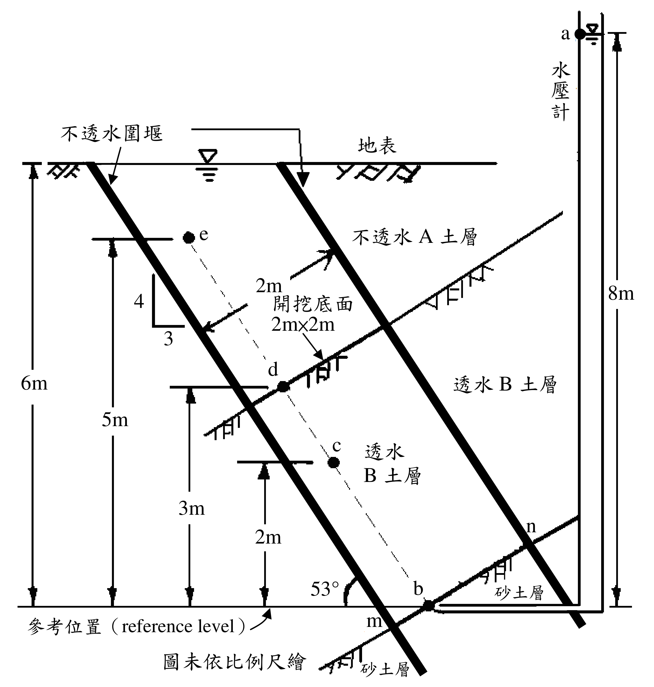
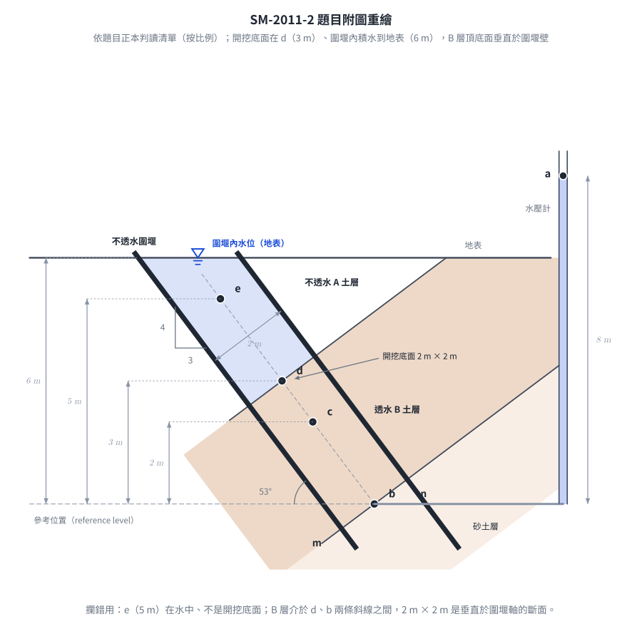
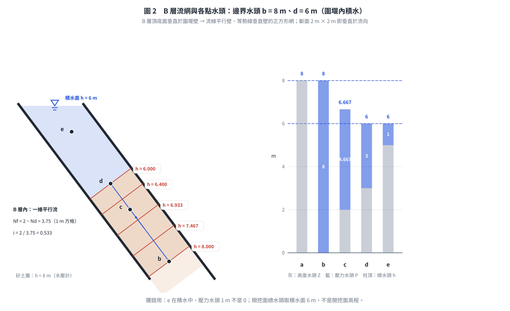

📄 題目正本：考卷原文・附圖・判讀清單（已確認）
SM-2011-2 題目正本
本檔只記錄考卷上寫了什麼、圖上畫了什麼，不含任何解法。解析見同資料夾
SM-2011-2.md。
判讀清單已確認（凍結）；本檔原則上不再修改（改動須回考卷原圖並記 log）。
| 項目 | 內容 |
|---|---|
| 考卷 | raw/exams/SM-2011_土壤力學與基礎設計.pdf 第 1 頁（正面），第二題 |
| 考年 | 民國 100 年（2011） |
| 配分 | 25 分 |
| 附圖 | SM-2011-2-fig-2.png（傾斜圍堰、土層與水壓計；2026-11-15 由考卷重新擷取 500 dpi）；既有 SM-2011-2-fig-1.png 為同一圖，「不透水圍堰」標籤上方帶滑鼠游標，保留不刪 |
| 判讀狀態 | 已確認（2026-11-15 關卡一：使用者授權依建議判讀確認；#1–#3 影響答案，依建議定案；轉錄 2026-11-15；PyMuPDF 110 dpi 全頁目視，附圖 260–500 dpi 局部放大（內嵌點陣影像）；PDF 文字層核對逐字原文；盲讀後才比對既有解析） |
1. 考卷原文（逐字）
二、某工地因施工需要在複雜土層進行傾斜向開挖底面為 2 m×2 m 正方形之圍堰開挖，如下圖所示，開挖後水在圍堰內土層 B 之土壤中產生滲流，試求㈠a、b、c、d、e 各點之總水頭、高度水頭及壓力水頭各為若干（m）？㈡試繪流經此土壤之流網及計算流經此土壤之平均水力坡降 $i_{bd}$ 為若干？㈢若此土層 B 之土壤透水係數 k＝0.005 cm/sec，試計算其滲流量為若干（m³/day）？（25 分）
2. 考卷給的公式、附表與參數
- 開挖底面 2 m × 2 m 正方形；土層 B 透水係數 $k$ = 0.005 cm/sec。
- 圖上尺寸（由參考位置起算的高度）：地表 6 m、e 點 5 m、d 點 3 m、c 點 2 m、b 點 0（參考位置）、水壓計水位 a 點 8 m；圍堰壁斜率 4：3（與水平夾 53°）；兩壁垂直間距 2 m。
- 圖註：「圖未依比例尺繪」。
- 沒有給：$\gamma_w$、圍堰壁厚、B 層頂底面的傾角數值。
- 卷首注意事項：㈠可以使用電子計算器。㈡不必抄題，作答時請將試題題號及答案依照順序寫在試卷上，於本試題上作答者，不予計分。㈢本試題之相關符號、公式、物理常數及設計參數未提及時，請依規範自行合理推斷或假設。
3. 附圖

圖面文字照錄：a、水壓計、不透水圍堰、地表、e、不透水 A 土層、2m、開挖底面 2m×2m、4、3、d、6m、5m、透水 B 土層、c、透水 B 土層、3m、2m、n、53°、b、砂土層、8m、參考位置（reference level）、m、圖未依比例尺繪、砂土層。
4. 判讀清單
| # | 項目 | 判讀 | 圖上／題文依據 | 把握 |
|---|---|---|---|---|
| 1 | 圍堰內水位 | 圍堰內積水到地表（高程 6 m）：▽ 畫在兩道圍堰之間的地表線上；e 點（5 m）在水中 | 附圖 ▽ 位置；題文「開挖後水在圍堰內土層 B 之土壤中產生滲流」 | 不確定（影響答案）；依建議定案 |
| 2 | 開挖底面位置 | 開挖底面＝B 層頂＝過 d 點（高程 3 m）的斜線，不是 e 點高程；「開挖底面 2m×2m」的箭頭指向過 d 的那條線 | 附圖 260 dpi：標籤箭頭尖端落在 d 線上 | 確定（解讀；影響答案） |
| 3 | B 層頂、底面方向 | 過 d 的 B 層頂與過 b 的 B 層底（砂土層頂）在圖上近乎平行，且近乎垂直於圍堰壁（量得與壁夾角約 84°–96°；圖未依比例尺）；兩者都不是水平線。故 2 m × 2 m 開挖底面即垂直於圍堰軸向的斷面 | 附圖量測：d 線約上升 32°、b 線約上升 30°，壁方向 127° | 確定（解讀；影響答案） |
| 4 | 圍堰幾何 | 兩道平行不透水圍堰，斜率 4（垂直）：3（水平），與水平夾 53°（標在左壁與參考線交角）；壁間垂直距離 2 m | 附圖 4、3、53°、2m（箭頭垂直於壁） |
確定 |
| 5 | 各點高程 | 參考位置（b 點高程）為 0；c = 2 m、d = 3 m、e = 5 m、地表 = 6 m、a = 8 m；b、c、d、e 都在圍堰中心線（虛線）上 | 附圖左側各尺寸線皆由參考位置量起 | 確定 |
| 6 | a 點與水壓計 | b 點接管線水平往右至直立水壓計管，a 為管內水位（高程 8 m） | 附圖管線、水壓計、8m |
確定 |
| 7 | 土層 | 不透水 A 土層在 d 線以上（圍堰外）；透水 B 土層在 d 線與 b 線之間（圍堰內外皆標）；b 線以下為砂土層；m、n 為左、右壁與 b 線交點 | 附圖文字與線條 | 確定 |
| 8 | 圍堰內 d 線以上 | 已開挖，只有水（無土） | 題文「圍堰開挖」；#1、#2 | 確定（解讀） |
| 9 | 所求 ㈡ | 繪 B 層內流網並求 b→d 平均水力坡降 $i_{bd}$ | 題文 | 確定 |
| 10 | 所求 ㈢ | B 層滲流量，單位 m³/day | 題文 | 確定 |
| 11 | 考卷沒有給 | $\gamma_w$、壁厚、B 層頂底面傾角；圖未依比例尺 | 全題 | 確定 |
轉錄：2026-11-15（SM-U1-2 題目正本推廣・批 1）
確認：2026-11-15 使用者授權依建議判讀確認（SM-U1-2 題目正本推廣・批 1，關卡一；使用者指示「要我確認的請依你建議」）；⚠ #1–#3 與舊解讀法不同、影響答案，待使用者複核
考題編號：SM-2011-2
主分類： SM-U1-2 土壤滲透
副分類： SM-U2-3 開挖之穩定性分析
分析法： 有效應力法
標籤： 流網 Darcy定律 滲透係數 水頭計算 水力坡降 滲流量 圍堰開挖
1. 題目（考卷原文見題目正本）
考卷原文、公式／附表、附圖與判讀清單（已確認）見
SM-2011-2-problem.md。本節只列解題時最容易讀錯的地方與本解使用的記號；題意以題目正本為準。

重繪自考卷附圖，依題目正本判讀清單 #1–#8（考卷圖未依比例，本圖按判讀值繪）；攔下的判讀錯誤：開挖底面在 d 而非 e，e 在積水中；2 m × 2 m 是垂直於圍堰軸的斷面。
常見誤讀
| 項目 | 正確判讀 | 常見誤讀 |
|---|---|---|
| 開挖底面 | 過 d（3 m）的 B 層頂（題目正本 #2） | 把開挖底面放在 e 的高程 5 m（本解 2026-11-15 前即如此，$Q$ 算成 6.64 m³/day） |
| 圍堰內水位 | 積水到地表 6 m，e 點在水中（#1，依建議定案） | 當成無積水、e 點壓力水頭 0 |
| 滲流斷面 | B 層頂、底面近乎垂直於圍堰壁，2 m × 2 m 即垂直於流向的斷面（#3） | 把 2 m × 2 m 當水平面積再乘 sin 53°（得 3.2 m²） |
| 流徑 | B 層內 b→d，沿圍堰軸長 $(3-0)/\sin 53^\circ$（#4、#5） | 取 b→e 為流徑（e 在積水中，不在土裡） |
本解記號： 參考位置（b 點高程）為 0；$h$ 總水頭、$z$ 高度水頭、$h_p$ 壓力水頭；$i_{bd}$ b→d 平均水力坡降；$Q$ 滲流量。
2. 考題核心精神與出題者意圖
- 測驗考生對於一維滲流中總水頭、高度水頭、壓力水頭關係的掌握度，尤其是邊界條件：b 點由水壓計決定（總水頭 8 m），開挖面由圍堰內水位決定（總水頭 6 m）。
- 測驗是否能正確認知「流徑長度」（沿圍堰軸方向，而非垂直高差）。
- 測驗能否看懂附圖：開挖底面在 d（B 層頂），e 在圍堰內的積水中；B 層頂、底面垂直於圍堰壁，所以 2 m × 2 m 本身就是垂直於流向的斷面。
3. 解題戰略地圖與陷阱分析
- 步驟 1：定義基準面（參考位置 b = 0 m），找出各點之高程 $Z$。
- 步驟 2：確認邊界條件。B 層底接砂土層，水頭由水壓計決定，$h_b = 8$ m；B 層頂（開挖底面，過 d）接圍堰內積水，積水面在地表 6 m，故 $h_d = 6$ m；e 在積水中，$h_e = 6$ m。
- 步驟 3：流徑沿圍堰軸，$L_{bd} = (Z_d - Z_b)/\sin 53^\circ = 3.75$ m，求平均水力坡降 $i_{bd}$。
- 步驟 4：B 層內水頭沿流徑線性遞減，$h = h_b - i \cdot s$，求 c 點總水頭，再推壓力水頭。
- 步驟 5：$Q = k\,i\,A$，$A$ = 2 m × 2 m（垂直於流向）。
- 陷阱 1：把開挖底面讀成 e 的高程（5 m）並令 e 壓力水頭為 0——e 在積水中，開挖底面在 d（題目正本 #1、#2）。
- 陷阱 2：流徑長度誤用垂直高差 3 m。滲流沿 53° 的圍堰軸，必須除以 $\sin 53^\circ = 0.8$。
- 陷阱 3：把 2 m × 2 m 當水平面積再乘 $\sin 53^\circ$。B 層頂、底面垂直於圍堰壁（#3），開挖底面本身就是垂直於流向的斷面，$A = 4$ m²。
3.5 變數層次分析
最終目標
求出各點水頭、水力坡降以及每日滲流量
本題關鍵公式（依計算順序）
-
b 到 d 之流徑長度：
$$L_{bd} = \frac{Z_d - Z_b}{\sin\theta}$$ -
平均水力坡降：
$$\boxed{i_{bd}} = \frac{h_b - h_d}{\boxed{L_{bd}}}$$ -
各點總水頭（B 層內）：
$$h = h_b - \boxed{i_{bd}} \cdot s$$ -
壓力水頭：
$$h_p = \boxed{h} - Z$$ -
滲流量：
$$Q = k \cdot \boxed{i_{bd}} \cdot A$$
L1：題目直接給定
| 符號 | 數值 | 說明 |
|---|---|---|
| $\theta$ | $53^\circ$ | 圍堰壁傾角（4：3，$\sin\theta = 0.8$） |
| $Z_a, Z_b, Z_c, Z_d, Z_e$ | 8、0、2、3、5 m | 各點高程（參考位置 = 0） |
| 地表 | 6 m | 圍堰內積水面（題目正本 #1） |
| $A$ | $2\text{ m}\times 2\text{ m} = 4\text{ m}^2$ | 開挖底面＝垂直於圍堰軸的斷面（#3） |
| $k$ | $0.005 \text{ cm/s}$ | 透水層 B 之透水係數 |
L2：需知識點推導
| 符號 | 公式／來源 | 卡關? |
|---|---|---|
| $h_b$ | 水壓計水位 a，$h_b = h_a = 8$ m | |
| $h_d$ | B 層頂接圍堰內靜水，$h_d$ = 積水面高程 6 m | |
| $L_{bd}$ | $(Z_d - Z_b)/\sin\theta = 3.75$ m | |
| $i_{bd}$ | $(h_b - h_d)/L_{bd}$ | |
| $Q$ | $k \cdot i_{bd} \cdot A$ |
L3：深層知識（不懂就卡住）
| 知識點 | 說明 | 卡關? |
|---|---|---|
| 開挖面邊界條件 | 開挖面上方若有積水，開挖面的總水頭＝積水面高程，不是開挖面高程；只有「無積水、自由出流」時壓力水頭才是 0。 | |
| 傾斜滲流流徑 | 沿著與圍堰壁平行的方向量，並非垂直高程差。 | |
| 流量截面積 | 達西定律 $Q=kiA$ 中的 $A$ 必須垂直於流向；本題 B 層頂底面垂直於壁，開挖底面即為此斷面。 |
4. 步驟化詳細計算過程
（一）a、b、c、d、e 各點之總水頭、高度水頭及壓力水頭計算
Step 1：確定各點高程 (Elevation Head, Z)
由圖中參考位置 (0 m) 與標示尺寸可知：
- $Z_a = 8\text{m}$（水壓計內水面）
- $Z_b = 0\text{m}$（B 層底、參考位置）
- $Z_c = 2\text{m}$
- $Z_d = 3\text{m}$（B 層頂＝開挖底面）
- $Z_e = 5\text{m}$（圍堰內積水中）
Step 2：確定邊界水頭
-
a 點：水壓計內水面，與大氣接觸，壓力水頭 $P_a = 0\text{m}$。
總水頭 $h_a = Z_a + P_a = 8 + 0 = \boxed{8\text{m}}$。 -
b 點：砂土層為高透水層，水頭由水壓計決定。
總水頭 $h_b = \boxed{8\text{m}}$。壓力水頭 $P_b = h_b - Z_b = 8 - 0 = \boxed{8\text{m}}$。 -
d 點：開挖底面上方為圍堰內積水，積水面在地表（6 m），靜水中總水頭處處等於水面高程。
總水頭 $h_d = \boxed{6\text{m}}$。壓力水頭 $P_d = h_d - Z_d = 6 - 3 = \boxed{3\text{m}}$。 -
e 點：位於積水中（靜水）。
總水頭 $h_e = \boxed{6\text{m}}$。壓力水頭 $P_e = h_e - Z_e = 6 - 5 = \boxed{1\text{m}}$。
Step 3：計算水力坡降與 c 點水頭
由圖示斜率 $4:3$，可知傾角 $\theta = 53^\circ$，$\sin\theta = 0.8$。B 層內流線平行於不透水圍堰壁：
- b 到 d 的流徑長度 $L_{bd} = \frac{Z_d - Z_b}{\sin 53^\circ} = \frac{3 - 0}{0.8} = 3.75\text{m}$
- 總水頭差 $\Delta h = h_b - h_d = 8 - 6 = 2\text{m}$
-
水力坡降 $i = \frac{\Delta h}{L_{bd}} = \frac{2}{3.75} = 0.533$
-
c 點：沿流向距 b 點 $s_c = \frac{Z_c - Z_b}{\sin 53^\circ} = \frac{2 - 0}{0.8} = 2.5\text{m}$
總水頭 $h_c = h_b - i \cdot s_c = 8 - 0.5333 \times 2.5 = \boxed{6.667\text{m}}$
壓力水頭 $P_c = h_c - Z_c = 6.667 - 2 = \boxed{4.667\text{m}}$
（交叉驗算：b、c、d 同在圍堰軸上，以高程內插 $h_c = 8 - 2 \times \frac{2}{3} = 6.667$ m，相同。）
計算結果彙整表：
| 點位 | 高度水頭 $Z$ (m) | 壓力水頭 $P$ (m) | 總水頭 $h$ (m) |
|:---:|:---:|:---:|:---:|
| a | 8.0 | 0.0 | 8.0 |
| b | 0.0 | 8.0 | 8.0 |
| c | 2.0 | 4.667 | 6.667 |
| d | 3.0 | 3.0 | 6.0 |
| e | 5.0 | 1.0 | 6.0 |
（二）試繪流經此土壤之流網及計算平均水力坡降 $i_{bd}$
1. 計算平均水力坡降 $i_{bd}$
- d 點的總水頭 $h_d = 6\text{m}$，b 點的總水頭 $h_b = 8\text{m}$。
- b 到 d 的流徑長度 $L_{bd} = \frac{Z_d - Z_b}{\sin 53^\circ} = \frac{3}{0.8} = 3.75\text{m}$。
- $i_{bd} = \frac{h_b - h_d}{L_{bd}} = \frac{8 - 6}{3.75} = \frac{2}{3.75} = \boxed{0.533}$
2. 流網繪製要點
- 邊界條件：
- 左、右兩道不透水圍堰壁為流線。
- B 層頂（開挖底面，過 d）與 B 層底（砂土層頂，過 b）為等勢線；兩者都垂直於圍堰壁（題目正本 #3）。
- 網格特徵：
- 邊界流線互相平行、邊界等勢線垂直於壁，所以 B 層內是純一維滲流：流線全部平行於壁（傾角 53°），等勢線全部垂直於壁，流網是整齊的正方形格子，端點不需彎曲。
- 通道寬（壁間垂直距）2 m、流徑長 3.75 m。取方格邊長 1 m：$N_f = 2$（3 條流線含兩壁）、$N_d = 3.75$（等勢線沿軸每 1 m 一條，每條降 $2/3.75 = 0.533$ m）。
(作答時建議手繪草圖：畫出兩條 53° 的平行線作為邊界流線，中間一條平行流線；再沿軸每 1 m 畫一條垂直於壁的等勢線，兩端分別是過 b 與過 d 的層面。)

圖 2 B 層頂底面垂直於圍堰壁，流網是正方形格子，邊界水頭 b = 8 m（水壓計）、d = 6 m（積水面）。攔下「開挖底面當成 e、e 壓力水頭取 0」與「2 m × 2 m 再乘 sin 53°」的錯誤（本解 2026-11-15 前即如此）。
（三）計算滲流量 (m³/day)
- 透水係數 $k = 0.005\text{ cm/s} = 5 \times 10^{-5}\text{ m/s}$
- 垂直於流向的截面積：開挖底面 2 m × 2 m 即垂直於圍堰軸的斷面，$A = 4\text{m}^2$。
-
滲流量 $Q$ (使用達西定律)：
$$Q = k \cdot i \cdot A = (5 \times 10^{-5}\text{ m/s}) \times 0.5333 \times 4\text{ m}^2 = 1.067 \times 10^{-4}\text{ m}^3\text{/s}$$ -
換算為每日滲流量：
$$Q = 1.067 \times 10^{-4} \times (60 \times 60 \times 24) = 9.216 \approx \boxed{9.22 \text{ m}^3\text{/day}}$$
(交叉驗算（流網公式）：$Q = k\,\Delta h\,\frac{N_f}{N_d} \times$ 寬 $= 5\times10^{-5} \times 2 \times \frac{2}{3.75} \times 2 = 1.067\times10^{-4}$ m³/s，相同。)
5. 關鍵爭議點與進階探討
- 圍堰內水位的判讀（題目正本 #1，依建議定案）：考卷 ▽ 畫在兩道圍堰之間的地表線上，本解取圍堰內積水到地表。若改為「抽乾、開挖面自由出流」，$h_d = Z_d = 3$ m，$\Delta h = 5$ m、$i_{bd} = 1.333$，已超過一般土壤的臨界水力坡降（約 1），開挖面會發生砂湧——這也說明開挖時圍堰內保持積水的工程意義。
- 本解 2026-11-15 前的讀法（對照）：把開挖底面放在 e（5 m）、e 壓力水頭 0、斷面取 $4 \times \sin 53^\circ = 3.2$ m²，得 $h_d$ = 6.2 m、$h_c$ = 6.8 m、$i_{bd}$ = 0.48、$Q$ = 6.64 m³/day。e 在積水中、不在 B 層內，b→e 不是土中的流徑。
- 流徑長誤取鉛直高差（對照）：$L$ = 3 m 時 $i$ = 0.667、$Q$ = 11.52 m³/day，與傾斜流徑不符。
- 一維假設的合理性：本題 B 層頂、底面都垂直於圍堰壁，邊界等勢線與邊界流線正交，B 層內的一維線性水頭分布是精確解，不是近似。
修正日期：2026-11-15（§1 改為指向題目正本 SM-2011-2-problem.md，重繪附圖 figs/SM-2011-2-fig-1-problem.svg；§2 以後待階段 D 勘誤；§4（二） 補解題圖解 figs/SM-2011-2-fig-2-flownet.svg；非勘誤）
修正日期：2026-11-15（FIX：開挖底面在 d、圍堰內積水到地表——依已確認題目正本 #1–#3 重寫 §2–§5：$h_d$ 6.2 → 6 m、$h_c$ 6.8 → 6.667 m、$h_e$ 5 → 6 m、$i_{bd}$ 0.48 → 0.533、$A$ 3.2 → 4 m²、$Q$ 6.64 → 9.22 m³/day；§1 移除待勘誤警示。驗證：回考卷 2011 年第 1 頁附圖 110／500 dpi 目視，腳本重算 MISMATCHES: 0，流網公式交叉驗算；依 2026-11-15 獨立盲解比對）